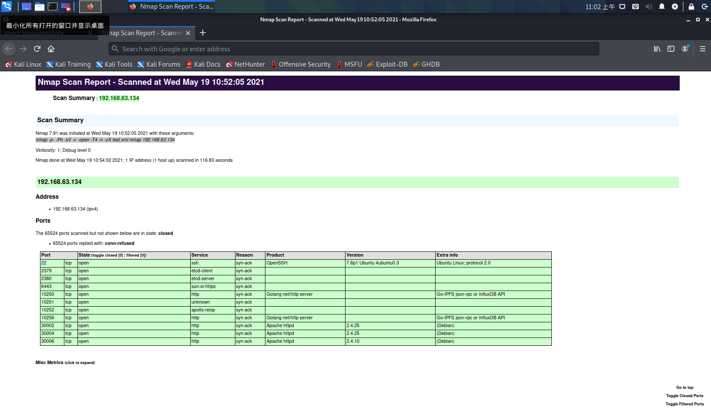

MASSCAN：Mass IP端口扫描程序
Masscan号称是世界上最快的扫描软件，可以在3分钟内扫描整个互联网端口，一台机器每秒传输1000万个数据包。(但是这个条件为4核电脑核双端口10G网卡)
它的用法(参数，输出)都类似于Nmap。
masscan相比nmap之所快很多，masscan采用了异步传输方式，无状态的扫描方式。像类似于端口扫描器 scanrand，unicornscan和ZMap。它更加灵活，允许任意端口和地址范围。
masscan不建立完整的TCP连接，收到SYN/ACK之后，发送RST结束连接。选项–banners除外。
nmap需要记录TCP/IP的状态，os能够处理的TCP/IP连接最多1500左右。
masscan常用的扫描语句：
masscan --ping 28.41.0.0/16 --rate 1000000 #主机存活
masscan -iL tmp_scanip_list.tmp -p1 -65535 -Pn -v --randomize-host (--banners) -oX result.xml --rate 100000 #全端口扫描可能存在扫描单个IP遇到设备干扰，这种时候就可以通过写脚本进行单个IP的扫描来测试是否是设备干扰，从而进一步排查问题。
可能扫描IP列表遇到设备干扰，这种情况就不适用写脚本单个IP进行扫描了，我们可以在最后数据导出成JSON或者XML文件时进行IP和端口的统计，将开放100即以上个端口的IP进行过滤。
Nmap
Nmap（网络映射器）是一款用于网络发现和安全审计的网络安全工具，它是自由软件。软件名字Nmap是Network Mapper的简称。通常情况下，Nmap用于：
- 列举网络主机清单
- 管理服务升级调度
- 监控主机
- 服务运行状况
Nmap可以检测目标主机是否在线、端口开放情况、侦测运行的服务类型及版本信息、侦测操作系统与设备类型等信息。 它是网络管理员必用的软件之一，用以评估网络系统安全。
Nmap 是不少黑客及脚本小子爱用的工具 。系统管理员可以利用Nmap来探测工作环境中未经批准使用的服务器，黑客通常会利用Nmap来搜集目标电脑的网络设定，从而计划攻击的方法。
Nmap通常用在信息搜集阶段，用于搜集目标机主机的基本状态信息。扫描结果可以作为漏洞扫描、漏洞利用和权限提升阶段的输入。例如，业界流行的漏洞扫描工具Nessus与漏洞利用工具Metasploit都支持导入Nmap的XML格式结果，而Metasploit框架内也集成了Nmap工具（支持Metasploit直接扫描）。
Nmap不仅可以用于扫描单个主机，也可以适用于扫描大规模的计算机网络（例如，扫描英特网上数万台计算机，从中找出感兴趣的主机和服务）。
0x00 核心功能
主机发现
用于发现主机是否存活，Nmap提供了多种检测机制，可以有效的识别主机。
端口扫描
用于扫描主机上的端口，Nmap可以将端口识别为开放（Open）、关闭（Closed）、过滤（Filtered）、未过滤（Unfiltered）、开放或过滤（Open|Filtered）、关闭或过滤（Closed|Filtered）。默认情况下，Nmap会扫描1660个常用的端口，可以覆盖大多数基本应用情况，详情可见端口扫描基础。
版本侦测
用于识别端口上运行的应用程序与程序版本，Nmap目前可以识别数千种应用的签名（Signatures）,检测数百种应用协议。而对于不识别的应用，Nmap默认会将应用的指纹(Fingerprint)打印出来，如果用户确知该应用程序，那么用户可以将信息提交到社区，为社区做贡献。
操作系统侦测
用于识别目标主机的操作系统类型、版本编号及设备类型。Nmap目前提供1500个操作系统或设备的指纹数据库，可以识别通用PC系统、路由器、交换机等设备类型，详情请见操作系统探测。
防火墙/IDS规避和哄骗
Nmap提供多种机制来规避防火墙、IDS的的屏蔽和检查，便于秘密地探查目标主机的状况。基本的规避方式包括：分片、IP诱骗、IP伪装、MAC地址伪装。
NSE脚本引擎
NSE是Nmap最强大最灵活的特性之一，可以用于增强主机发现、端口扫描、版本侦测和操作系统侦测等功能，还可以用来扩展高级的功能如web扫描、漏洞发现和漏洞利用等。Nmap使用Lua语言来作为NSE脚本语言，目前的Nmap脚本库已经支持350多个脚本。
0x01 Nmap的用法
Nmap的基本语法：
nmap [ <扫描类型> ...] [ <选项> ] { <扫描目标说明> }0x02 Nmap的使用
Nmap常用的扫描语句
nmap -p- -Pn -sV -v -open -T4 -n x.x.x.x
-p- 扫描全端口
-Pn 不ping
-sV 扫描版本信息
-v 开启扫描过程显示
--open 只显示开放端口
-T4 设置时序模板 #调节速率
-n 不进行dns解析
-sP 选项在默认情况下，发送一个ICMP回声请求和一个TCP报文到80端
-PU 发送一个UDP的Ping
-PS 发送一个SYN标志位的空TCP报文
-PA 发送一个ACK标志位的空TCP报文
-sS TCP SYN 扫描
-sT TCP connect()扫描
-sU UDP扫描
-sA TCP ACK 扫描
-F 快速扫描(只扫描)nmap-services 中的部分常用端口
-S <IP_Address>(源地址哄骗)
--spoof-mac<mac address,prefix,or vendor name>(MAC地址哄骗)
如果简单地使用字符串“0”，Nmap选择一个完全随机的MAC地址。
-f 报文分段
将TCP头分段在几个包中，使得包过滤器、IDS以及其他工具的检测更加困难关于时间和性能
Paranoid(-T0)：一个时间只能扫描一个端口
Sneaky(-T1)：探测报文间隔15秒
Polite(-T2)：探测报文间隔0.4秒，相比默认选项，会使用更少的带宽资源，以及降低对目标主机的压力
Normal(-T3)：nmap的默认选项，包含了并行扫描
Aggressive(-T4)：如果有合适可靠的网络，则加速扫描 #常用的扫描时间参数
Insane(-T5)：该选项假设用户有特别快的网络或者为了获得速度牺牲准确性输出
-oN <filepec>(标准输出)
-oX <filespec>(XML输出)
-oA <basename>(输出至所有格式) #常用的输出命令其他选项
-A (启用额外的高级和强度选项，是一个扫描集合)
-6 (启用IPv6扫描)
--privileged (假设用户具有全部权限，在unix或者linux系统中允许非特权用户进行原报文扫描)Nmap输出美化
使用nmap可以输出详细的xml格式的模板，但是xml格式的文本不能给予非专业友好的使用，但是用xsltproc可以转换xml到htm格式的模板，给予友好的可视度，详情请见Creating HTML Reports。
安装和使用步骤如下：
# apt-get install xsltproc
# nmap nmap -p- -Pn -sV -v -open -T4 -n 192.168.63.134 -oX test.xml
# xsltproc -o test.htm test.xml
Nmap内网扫描
大范围扫描，最关心的是效率问题，即时间成本，扫描的基本思路是高发并发地ping。
nmap -v -sn -PE --open -n --min-hostgroup 1024 --min-parallelism 1024 -oX nmap_output.xml 10.1.1.1/16
-sn 不扫描端口，只ping主机
-PE 通过ICMP echo判断主机是否存货
-n 不反向解析IP地址到域名
--min-hostgroup 1024 最小分组设置为1024个IP地址，当IP太多时，nmap需要分组，然后串行扫描
--min-parallelism 1024 这个参数非常关键，为了冲分利用系统和网络资源，我们将探针的数量限定最小为1024
-oX nmap_output.xml 将结果以XML格式输出，文件名为nmap_output.xmlMasnmap(Masscan+Nmap)
masscan + nmap 快速端口存活检测和服务识别。
思路很简单，将masscan在端口探测的高速和nmap服务探测的准确性结合起来，达到一种相对比较理想的效果。 先使用masscan以较高速率对ip存活端口进行探测，再以多进程的方式，使用nmap对开放的端口进行服务探测。
详情请参考masnmap。